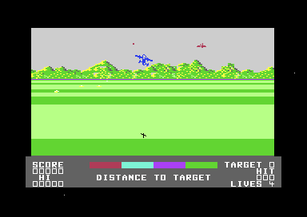
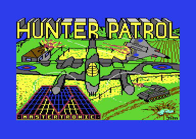

<meta charset="utf-8">
<meta name="viewport" content="width=device-width, initial-scale=1">
<title>{{title}}</title>
<link rel="preconnect" href="https://fonts.googleapis.com">
<link rel="stylesheet" href="https://fonts.googleapis.com/css2?family=Lato:wght@400;700;900&family=IBM+Plex+Mono:wght@400;500&display=swap">
<link rel="stylesheet" href="reference/hunter-page.css">
<!-- tabs -->
<header class="hero">
  <p class="eyebrow">{{platform}} · {{year}} · {{publisher}}</p>
  <h1>{{title}}</h1>
  <p class="sub">The plane never moves sideways: the joystick steers the landscape. Pushing the stick up sends the plane down, as in a flight simulator, and the tune on the title screen is switched off the moment play begins.</p>
</header>
<main class="wrap">
<section id="game">
  <h2 class="t">A propeller fighter strafing a scrolling plain</h2>
  <p>The player flies a fighter over enemy country and shoots whatever is on the ground. The plane sits low on the screen, seen from behind, with its shadow below it. The ground slides sideways under it as it turns, and four kinds of enemy defence come towards it across the fields, one kind after another.<sup class="fn"><a href="about.html#src-1" title="The documents on the disk">1</a></sup></p>
  <figure class="overview-shot"><figcaption>The first seconds of play. The bar at the bottom is the <a href="gameplay.html#target">distance to the target</a>; it loses a stretch of its colours as each kind of installation goes down.</figcaption></figure>
  <p>Once all four kinds are destroyed, the target itself arrives, and the player has <a href="gameplay.html#target">a strafing run for each plane left, and one more</a>. A target hit hard enough earns a plane and the next level; a target left standing means the level starts again. The cracker's documents say <a href="gameplay.html#levels">the levels</a> get faster and the flak worse;<sup class="fn"><a href="about.html#src-1" title="The documents on the disk">1</a></sup> in the code, each level asks for more hits on each kind of defence and brings a different target.</p>
  <p>The game can only be flown with <a href="controls.html#stick">a joystick in port one</a>, and its controls are not what a player of a modern flying game expects.</p>
</section>

<section id="makers">
  <h2 class="t">The people behind the game</h2>
  <p>Mastertronic published Hunter Patrol in 1985 at the budget price of £1.99. The title screen says it is "Written by Steve Lee", and Wikipedia lists Lee as the designer.<sup class="fn"><a href="about.html#src-2" title="Wikipedia, Hunter Patrol">2</a></sup><sup class="fn"><a href="about.html#src-3" title="GameBase64 page, with the ZZAP!64 review">3</a></sup> The music is by Rob Hubbard, whose <a href="music.html">driver</a> sits in the program at <a href="source.html#a000"><code>$A000</code></a>. The program also holds <a href="discoveries.html#unused-tune">a second tune with its own player</a> that the game never plays.</p>
  <p>The disk studied here is a crack by Remember. The loading picture, the <a href="discoveries.html#cracker">trainer menu</a> and the highscore saver belong to the cracker, and the Source tab marks the cracker's code.</p>
  <figure class="overview-shot"><figcaption>The loading picture on this disk: a bomber over a farm, a jet fighter and a tank, with the Mastertronic logo. It is signed "Jim", and the <a href="graphics.html#loading">Graphics tab</a> draws it from its bytes.</figcaption></figure>
</section>

<section id="reception">
  <h2 class="t">Reasonable but dated: 51 % from ZZAP!64</h2>
  <p>ZZAP!64 reviewed the game in issue 7, November 1985, and gave it 51 % overall: 65 % for the graphics ("Nice 3D ground effect, but little else"), 87 % for the sound, 67 % for hookability, and 51 % for lastability. Its verdict was "Reasonable but dated shoot em up."<sup class="fn"><a href="about.html#src-3" title="GameBase64 page, with the ZZAP!64 review">3</a></sup></p>
  <p>The sound score is the highest of the six. The magazine said the title tune, though not one of Rob Hubbard's better pieces, is very good, and that it gets monotonous. A player hears it only on the title screen, and <a href="discoveries.html#music">the reason is in the program</a>.</p>
  <p>Wikipedia compares the game to Sega's arcade game <i>Buck Rogers: Planet of Zoom</i>.<sup class="fn"><a href="about.html#src-2" title="Wikipedia, Hunter Patrol">2</a></sup> Both show a flat ground in perspective, with objects growing as they come near. The <a href="graphics.html#cast">Graphics tab</a> shows how this game does it, with every enemy stored as a sprite in ten sizes.</p>
</section>

<section id="explore">
  <h2 class="t">What's hidden in it</h2>
  <p>The program carries <a href="discoveries.html#unused-tune">a second tune that is never played</a>, which the <a href="music.html#unused">Music tab</a> plays. <a href="discoveries.html#stick">The stick dives when pushed up</a>, <a href="discoveries.html#sideways">the plane never moves sideways</a>, and <a href="discoveries.html#target-colour">a hit on either end of a target darkens its middle</a>. The prompt before each run says <a href="discoveries.html#typos">"STRAFFING"</a>, and the cracker added <a href="discoveries.html#trainer">a key that skips the level</a>.</p>
  <p><a href="gameplay.html">Read how a level plays</a>, <a href="controls.html">check the controls</a>, or <a href="graphics.html">see every sprite</a>, or <a href="music.html">hear both tunes</a>.</p>
</section>
</main>
<footer style="margin:16px 0 0;padding:22px var(--gx) 0;border-top:1px solid #e0ded8;font-family:'IBM Plex Mono',ui-monospace,Menlo,monospace;font-size:12px;color:#80838a"><a href="https://github.com/gamesexplained/gamesexplained" style="color:#1f5fa8;text-decoration:none">GitHub</a> · <a href="https://discord.gg/3V9GWyRDWV" style="color:#1f5fa8;text-decoration:none">Discord</a><br>© Games Explained contributors. Write-ups, facts and symbol maps are available under <a href="https://creativecommons.org/licenses/by-sa/4.0/" style="color:#1f5fa8;text-decoration:none">CC BY-SA 4.0</a>; code under <a href="https://opensource.org/licenses/MIT" style="color:#1f5fa8;text-decoration:none">MIT</a></footer>
